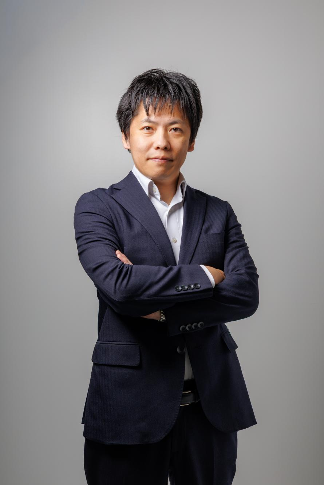
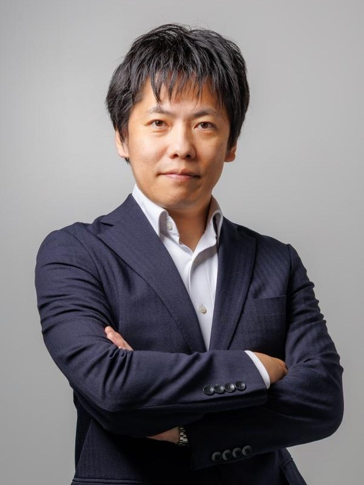

PROBLEM 01
ChatGPTやClaudeで、文章を作ってもらったり、調べ物を任せたりする場面は、もう当たり前になってきた。
便利だし、実際に助かってもいる。
ただ、もっとAIをうまく使いたい。でも何ができるのか。何かあるはずだけど分からない。
Anthropic公式のClaudeコミュニティアンバサダーであり、有料AIコミュニティ「SHIFT AI」の中核メンバーとして、これまでに5,000人以上にAIを指導してきた安永智也さんが、10月26日、沖縄に来てくださいます。
お申し込みは事前のオンライン決済制です。定員30名になり次第、受付を終了します。


ChatGPTやClaudeで、文章を作ってもらったり、調べ物を任せたりする場面は、もう当たり前になってきた。
便利だし、実際に助かってもいる。
ただ、もっとAIをうまく使いたい。でも何ができるのか。何かあるはずだけど分からない。
AIのニュースやセミナーの情報は、探さなくても毎日のように目に入ってくる。
勉強にはなるし、知らないよりは知っておきたいと思っている。
ただ、その情報のほとんどは全国区・都市部発のもので、沖縄の現場でどう活きるのかまでは、あまり語られていない。
自分なりにAIを仕事に取り入れて、成果につながっている実感もある。
ただ、この使い方で合っているのか、他の経営者はどう考えているのかを確かめる機会は、意外と少ない。
一人で試しながら進めている状態が、ここまで続いている。
その3つを、沖縄にいながら、直接確かめられる機会があるとしたら？
Anthropic公式のClaudeコミュニティアンバサダーであり、有料AIコミュニティ「SHIFT AI」の中核メンバーとして、これまでに5,000人以上にAIを指導してきた安永智也さん。
その安永さんが、10月26日、沖縄に来てくださいます。
Anthropicという名前を、ここで初めて見る方もいると思うので、先に少しだけご紹介します。
Claudeを開発しているのが、Anthropic（アンソロピック）という会社です。
2021年、アメリカ・サンフランシスコで設立された会社で、創業メンバーには、元OpenAIの研究者たちも名を連ねています。
安永さんの「Anthropic公式アンバサダー」という肩書きは、このAnthropicから公式に認められたものです。

安永智也さん
広告代理店勤務を経て1年間の世界一周へ。2014年の広島土砂災害では、災害ボランティアの中心人物として活動されました。
その後、福祉業界でAI活用による業務効率化を実現し、SHIFT AIで20以上のコースを修了、AIコンサルタントとして独立。現在は会員数23,000人を超える有料AIコミュニティ「SHIFT AI」の中核メンバーとして、これまでに5,000人以上にAIを指導。難しい用語を使わない、本質的な講義に定評があります。
「AIは都市部のものではない」──大企業と地方中小企業の間に広がるAI格差を埋めることをライフワークとし、飲食店・不動産・印刷・WEB制作・社会福祉法人・IT・工場など、業種を問わず現場でAI活用を証明し続けている方です。
セミナーのテーマは、
これからの経営に必要なAI時代の成長戦略 〜最先端のAI事情と活用方法〜
安永さんから、最先端のAI事情と、その活用方法について、現場で5,000人以上を指導してきた立場からお話しいただきます。

そして僕も、ファシリテーターとして登壇します。 棚原秀樹（U-WAN／ファシリテーター）
※詳細なカリキュラムは調整中のため、決まり次第このページに追記します
「AIの使い方」ではなく「AIをどう経営に組み込むか」
機能やツールの話ではなく、経営判断にどうつなげるかという視点で聞ける時間です。
沖縄で、直接、対話できる
画面越しでは拾いきれない空気や質問のやり取りを、その場でできます。
5,000人以上を指導してきた、現場の実例
都市部・地方を問わず、業種を問わず、現場でAI活用を証明してきた方の話をそのまま聞けます。
定員30名だから、自分の状況に引き寄せて聞ける
大人数の講演ではなく、少人数のリアル開催として設計しています。
AIの活用には、実は明確な「段階」があります。
安永さんが整理した「AI活用の8段階」です。
順位をつけるためのものではなく、「今の自分がどこにいて、次にどこへ進めるか」を確かめるためのものさしとして、見てみてください。
AI活用の8段階
安永さんが整理した、AI活用の「今の自分」を確かめるものさし
チャットボット
AIに質問・指示をすると、その場で回答してくれる。
ほとんどの方がこのレベル1ではないでしょうか。
そこに立てているだけで、AIを実務に取り入れている証です。その先を知ると、使い方の幅がもっと広がっていきます。
上のレベルに上がっていくほど、自律性・複雑性・運用レベルが高まっていきます。
「ChatGPTを使っている」と、「AIを使っている」は同じでしょうか？
ChatGPTに質問して、答えをもらう——それ自体、十分に価値のある使い方です。
ただ、8段階でいうと、それは主に「レベル1：チャットボット」の範囲に当てはまります。
今回のセミナーでは、安永さんの話を通じて、「何をもってAIを使っていると言えるのか」を自分の言葉で説明できるようになります。
一歩先を知ることで、今の使い方の価値も、より具体的に見えてきます。
自分のレベルが分かると、足りなさばかり見えてくるのでは？
「まだ7段階もある」と聞くと、つい「自分はまだ下の方だ」と感じるかもしれません。
ですが、この8段階は優劣を決めるためのものさしではありません。「今どこにいて、次にどの一段を上がれるか」を確かめるためのものです。どの段階からでも、次の一段は必ずあります。
終盤10分の質疑応答では、安永さんに自分の状況を直接聞くこともできます。
8段階の話は、うちの規模や業種にも当てはまるんでしょうか？
安永さんは、飲食店・不動産・印刷・WEB制作・社会福祉法人・IT・工場など、業種を問わず現場でAI活用を指導してきた方です。
8段階は、大企業向けの理論ではなく、現場で実際に使われている「ものさし」として整理されたものです。
自社の状況に当てはめて聞けるよう、当日は質疑応答の時間も用意しています。
僕自身、AI活用にゴールはないと思っています。
今どの段階にいても、そこから一段上がる道は必ずあります。
安永さんと一緒に、あなたの「次の一段」を、当日確かめられたらと思っています。
「AIの使い方」でなく「AIを経営にどう使うか」を、自分の言葉で説明できるようになる
5,000人以上を指導してきた視点を、自社の状況に当てはめて考えられるようになる
沖縄で、同じ問題意識を持つ経営者と顔を合わせられる
Anthropic公式アンバサダーから直接聞いた話を、自社の判断材料として持ち帰れる
一人で試行錯誤していたAI活用について、話せる相手ができる
会場は宜野湾ベイサイド情報センター、定員は30名です。画面越しではなく、その場で直接お話を聞いていただける機会として設けました。
参加費11,000円（税込）
この金額には、次の3つの理由があります。
当日は、安永さんによるAI時代の経営戦略の講義に加えて、棚原もファシリテーターとして登壇します。
※資料の配布はございません。安永さんの話を直接聞くことに集中していただく、会場受講のセミナーです。
今回のリアル開催は、10月26日（月）の1回のみのご案内です。恐れ入りますが、現時点で別日程は予定していません。
今回はリアル開催のみで、オンライン配信・ハイブリッド配信は行っていません。沖縄以外にお住まいの方は、恐れ入りますが会場までお越しいただく形になります。
安永智也さんに沖縄まで来ていただくゲスト登壇であること、会場を用意したリアル開催であること、定員30名の少人数制であることを踏まえた金額です。
会場には駐車場がございますが、台数に限りがございます。少し早めのご来場や、公共交通機関のご利用もあわせてご検討いただけますと安心です。
お支払いは、クレジットカード決済（Stripe）のみとなっております。恐れ入りますが、銀行振込でのお支払いは承っておりません。
大変恐れ入りますが、お申し込み後のキャンセル・返金は承っておりません。定員30名の少人数開催のため、まずはご予定をよくご確認のうえ、お申し込みをお願いいたします。
もし当日どうしても参加が難しくなった場合は、お手数だとは思いますが、必ずご一報いただけますと助かります。定員に漏れてしまった方に、あらためて席をご案内できるようにするためです。ご連絡さえいただければ、次に待っている方の力になれますので、その時はどうぞ遠慮なくお知らせください。
沖縄で、安永さんから直接この話を聞ける機会は、そう多くありません。
10月26日、宜野湾でお会いできたらうれしいです。
参加費 11,000円（税込）でのお申し込みは、以下のボタンからお進みください。
このページを最後まで読んでくださって、ありがとうございます。
安永さんが沖縄まで来てくださる機会は、そう多くありません。定員30名、リアル開催のみのセミナーです。
ご都合が合えば、10月26日、宜野湾でお会いできたら嬉しいです。